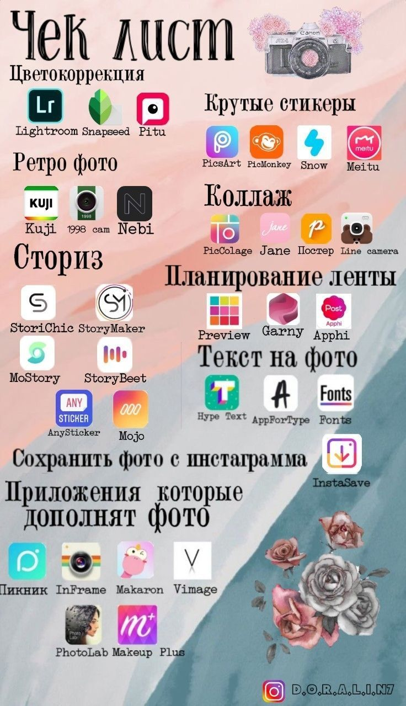

-
Перечень шагов
Здесь всё просто - вы перечисляете шаги, которые нужно сделать, чтобы прийти из пункта А в пункт Б. Такой чек-лист всегда очень востребован у тех, кто только начинает.
-
Свод правил
Этот чек-лист похож на предыдущий, только речь идёт о правилах, которые необходимо соблюдать. Не нужно брать ничего глобального. Выбираете небольшую задачу и раскладываете её по косточкам. Наглядные примеры:
-
Перечень ошибок или бесполезных действий
Эдакие правила наоборот. Перечислите типичные ошибки, которые совершает ваша аудитория. Или действия, которые все делают, но они не работают. Недавно я скачала чек-лист от врача, где он составил список разрекламированных, но бесполезных средств от простуды. Мега полезно!
-
Проверочный список
Вы составляете список обязательных пунктов. Например, что должно быть на странице Инстаграм, чтобы она продавала или что взять с собой в путешествие. Еще один популярный формат "проверочных списков" - это что нужно делать каждый день, каждую неделю, каждый месяц и т.д.
-
Этапы и уровни
В каждой сфере есть свои этапы и уровни. Есть этапы в отношениях, взрослении детей, развитии своего дела, прохождения психотерапии и тд. Опишите коротко эти этапы. Такие чек-листы очень хорошо работают у помогающих практиков. Не нужно объяснять длинно или рассказывать, как переходить с одного уровня на другой. Достаточно будет того, что человек увидит весь путь, найдет себя на этой шкале и поймет, что его ждет дальше.
-
Внутренние ограничения
Здесь речь идет о вещах бессознательных: неявных страхах и скрытых установках. Что внутри человека не дает пробить финансовый потолок, построить отношения, сбросить вес, делегировать бизнес и тд. Тут тоже важно сохранить краткость изложения. Более подробно о каждом пункте вы можете рассказывать в прямых эфирах, рассылке, онлайн-курсе.
-
Рекомендации, секреты и лайфхаки
Составьте список действий, который поможет человеку решить важную задачу. Как справится с тягой к сладкому, легче вставать по утрам, помочь ребенку освоится в садике, научиться откладывать деньги - всё это всегда будет пользоваться спросом.
-
Список идей
Список идей - это то, что вы сейчас читаете, лучшие подборки с фильмами. Этот список может быть как с кратким описанием по каждому пункту, так и без.
-
Список обязательных вещей (маст-хэвы)
Что входит в "базовый гардероб" вашей коллекции , тренды в моде, что должно быть в домашней аптечке, какие уходовые средства обязаны быть у каждой девушки - такие списки скачивают с большим удовольствием, потому что они помогают сэкономить время, деньги и перейти от количества к качеству.
-
Полезные сервисы и приложения
Хорошее приложение или сервис может здорово облегчить жизнь. А вот его поиск - превратиться в вереницу ошибок и разочарований. Помогите людям в этом разобраться, составьте список того, что вы порекомендуете с закрытыми глазами. Будет совсем хорошо, если вы добавите ещё и "антирейтинг" - того, чем пользоваться не стоит.

-
Список критериев (свойств, качеств)
На что обратить внимание, когда выбираешь ноутбук, квартиру, световой стол, психолога, смм-менеджера, няню? Главное предназначение такого чек-листа - помочь человеку сделать правильный выбор.
Пример, как выбрать световой стол:
-
Диагностические вопросы
Это не совсем формат чек-листа, но в силу краткости этого документа, я отнесла его сюда. Вопросы могут быть двух видов:
- Коучинговые вопросы. Задавая их себе, человек находит нужные ему ответы.
- Тестовые вопросы. Человек отвечает на них, а вы в конце даете расшифровку.